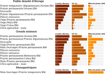

01 / Composition & vulnérabilité
Relier la composition des systèmes agricoles à leurs performances
À partir d'une représentation détaillée des flux d'azote, j'étudie comment l'assolement et la structure des cheptels sont associés aux performances agro-environnementales et à plusieurs formes de vulnérabilité : dépendance aux approvisionnements, concentration des fonctions et dépendance à des chemins dominants.
Ce travail porte sur 33 territoires français observés entre 1852 et 2014 et constitue la première application historique de E-GRAFS.
Lire la prépublication SSRN
Extrait des analyses de vulnérabilité et de structure de réseau présentées dans la thèse.